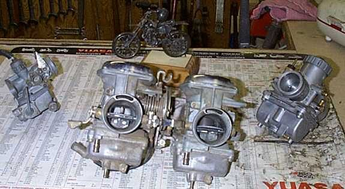
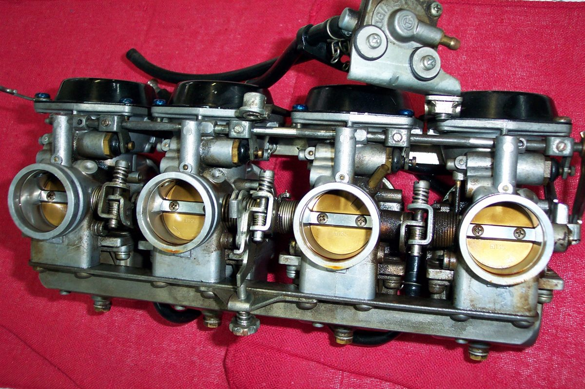
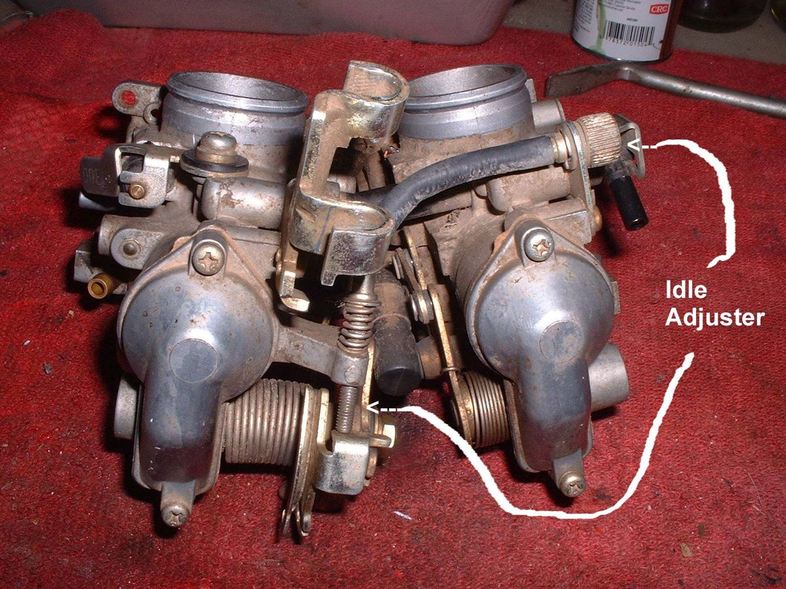
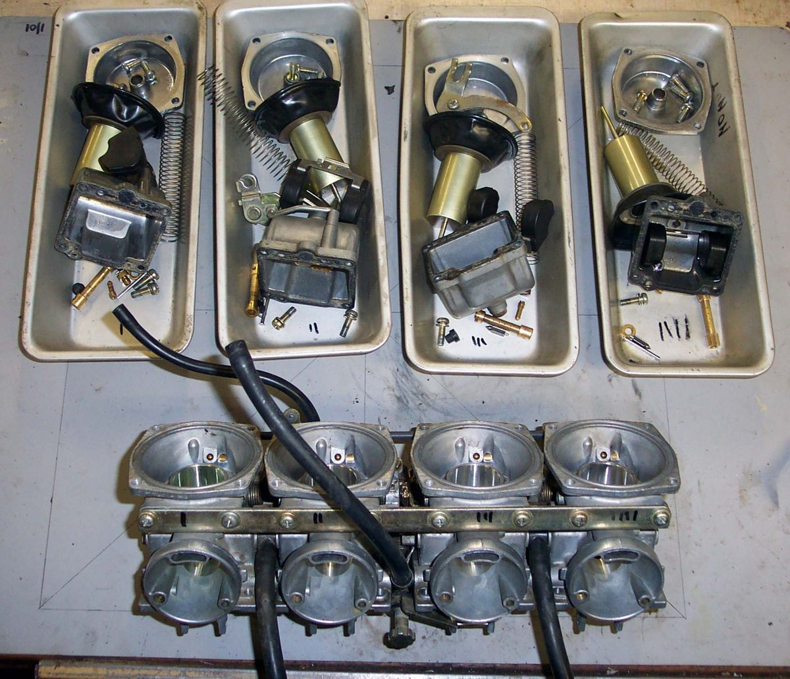
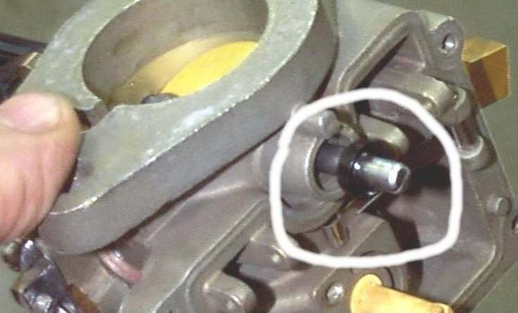

Most carburettor faults come after the bike has stood and are caused by dirt and varnish, not wear. The carburettor must come off to be cleaned well. Old rubber boots and the intake manifold harden and grip the carburettor. The body is soft metal and breaks easily, so it should never be levered hard.
Safety
- Fuel is flammable. Turn the tap off, work outdoors or in good air, and keep a fire extinguisher near.
- Disconnect the battery earth lead. Cover the open intake to keep dirt and small parts out.
- Wear eye protection when using sprays.
You need
- The bike's manual for the order of removal and for settings.
- Trays or boxes, one for each carburettor, and a marker.
- Carburettor cleaner. Keep it off rubber parts.
Steps
- Clean the outside of the engine and carburettor first so dirt does not fall in.
- Turn the fuel tap off. Pull off the fuel hose and catch the fuel. Drain the float bowl with the drain screw if it has one.
- Disconnect the throttle cable and the choke cable. Note the way they were routed. Take photos.
- Loosen the clamps at the air box side and at the engine side. Disconnect vent, overflow and vacuum hoses.
- If the boots hold the carburettor, warm them gently with a heat gun or with hot water, then twist and ease the carburettor out. Rubber also slides off more easily with a little silicone-based protectant. Never pry on thin cast parts.
- Multiple carburettors are bolted as a unit. Keep them as one assembly and do not split them. This keeps the throttle linkage and slide settings.
- Put the parts of each carburettor in its own tray so that nothing is mixed up.
- If the boots are hard or cracked, fit new ones. If they are not for sale, soaking in cleaner for a short time can soften them. Check often, because too long ruins the rubber.
- Refit in reverse. Seat the carburettor squarely in both boots, tighten the clamps evenly, and check the cable free play.
Check your work
- No air leaks at the boots: Find an intake air leak.
- Throttle opens and closes fully, and the choke works.
- No fuel at the hoses with the tap on.
If it did not fix the problem
- Clean inside the carburettor: Clean the carburettor.
- Idle problems after refit: Adjust carburettor idle speed and mixture.